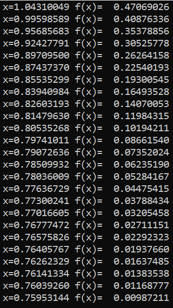

Metoda Coardelor
Metoda coardelor constă în divizarea segmentului în părţi proporţionale,
proporţia fiind dată de punctul de intersecţie al coardei care uneşte extremităţile segmentului cu axa 0x.
Funcția noastră în cazul dat se supune tuturor cerințelor necesare pentru a utiliza această metodă și anume:
- Este continuă
- . Pe segmentul [0.1, 1.1] există f´(x) ≠ 0; f˝(x) ≠ 0, continuie, iar semnul lor pe [0.1, 1.1] este constant
Aceste proprietăți garantează existența soluției unice ale ecuației f(x)=0 pe intervalul dat.
Programul care a fost utilizat pentru rezolvarea ecuației f(x)=0 cu ajutorul metodei coardelor este:
Aplicarea metodei coardelor necesită o cercetare prealabilă a funcţiei f(x), pentru stabilirea extremităţii fixe,din care vor fi trasate coardele.
Numărul n de aproximări succesive ale soluţiei poate fi indicat în enunţul problemei sau determinat de o condiţie.
Pentru a evita calculul f ′′(x), se va folosi următorul procedeu:
se
determină semnul f(x) în punctul c de intersecţie cu axa 0x al dreptei care trece prin punctele (0.1, f(0.1)) şi (1.1, f(1.1))
Rezultatele in urma programului sunt:
Pentru a ajunge la un rezultat fix am utilizat 111 aproximări ceea ce variază în dependență de program.
De asemenea pot adăuga
că x-ul găsit este cel corect, si cel care alte surse ni-l comunică.
Pentru metoda a 2-a avem programul:

Cu rezultatul:


Înapoi